산업안전기사 (2022-04-24 기출문제)
1과목: 안전관리론
1. 매슬로우(Maslow)의 인간의 욕구단계 중 5번째 단계에 속하는 것은?
- 안전 욕구
- 존경의 욕구
- 사회적 욕구
- 자아실현의 욕구
(정답률: 69%)

2. A사업장의 현황이 다음과 같을 때 이 사업장의 강도율은?
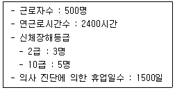
- 0.22
- 2.22
- 22.28
- 222.88
(정답률: 49%)
3. 보호구 자율안전확인 고시상 자율안전확인 보호구에 표시하여야 하는 사항을 모두 고른 것은?
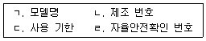
- ㄱ, ㄴ, ㄷ
- ㄱ, ㄴ, ㄹ
- ㄱ, ㄷ, ㄹ
- ㄴ ,ㄷ ,ㄹ
(정답률: 52%)
4. 학습지도의 형태 중 참가자에게 일정한 역할을 주어 실제적으로 연기를 시켜봄으로서 자기의 역할을 보다 확실히 인식시키는 방법은?
- 포럼(Forum)
- 심포지엄(Symposium)
- 롤 플레잉(Role playing)
- 사례연구법(Case study method)
(정답률: 72%)
5. 보호구 안전인증 고시상 전로 또는 평로 등의 작업 시 사용하는 방열두건의 차광도 번호는?
- #2 ~ #3
- #3 ~ #5
- #6 ~ #8
- #9 ~ #11
(정답률: 50%)
6. 산업재해의 분석 및 평가를 위하여 재해발생 건수 등의 추이에 대해 한계선을 설정하여 목표 관리를 수행하는 재해통계 분석기법은?
- 관리도
- 안전 T점수
- 파레토도
- 특성 요인도
(정답률: 52%)
7. 산업안전보건법령상 안전보건관리규정 작성 시 포함되어야 하는 사항을 모두 고른 것은? (단, 그 밖에 안전 및 보건에 관한 사항은 제외한다.)
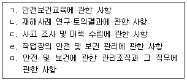
- ㄱ, ㄴ, ㄷ, ㄹ
- ㄱ, ㄴ, ㄹ, ㅁ
- ㄱ, ㄷ, ㄹ, ㅁ
- ㄴ, ㄷ, ㄹ, ㅁ
(정답률: 56%)
8. 억측판단이 발생하는 배경으로 볼 수 없는 것은?
- 정보가 불확실할 때
- 타인의 의견에 동조할 때
- 희망적인 관측이 있을 때
- 과거에 성공한 경험이 있을 때
(정답률: 41%)
9. 하인리히의 사고예방원리 5단계 중 교육 및 훈련의 개선, 인사조정, 안전관리규정 및 수칙의 개선 등을 행하는 단계는?
- 사실의 발견
- 분석 평가
- 시정방법의 선정
- 시정책의 적용
(정답률: 33%)
10. 재해예방의 4원칙에 대한 설명으로 틀린 것은?
- 재해발생은 반드시 원인이 있다.
- 손실과 사고와의 관계는 필연적이다.
- 재해는 원인을 제거하면 예방이 가능하다.
- 재해를 예방하기 위한 대책은 반드시 존재한다.
(정답률: 59%)
11. 산업안전보건법령상 안전보건진단을 받아 안전보건개선계획의 수립 및 명령을 할 수 있는 대상이 아닌 것은?
- 유해인자의 노출기준을 초과한 사업장
- 산업재해율이 같은 업종 평균 산업재해율의 2배 이상인 사업장
- 사업주가 필요한 안전조치 또는 보건조치를 이행하지 아니하여 중대재해가 발생한 사업장
- 상시근로자 1천명 이상인 사업장에서 직업성 질병자가 연간 2명 이상 발생한 사업장
(정답률: 62%)
12. 버드(Bird)의 재해분포에 따르면 20건의 경상(물적, 인적상해)사고가 발생했을 때 무상해·무사고(위험순간) 고장 발생 건수는?
- 200
- 600
- 1200
- 12000
(정답률: 46%)
13. 산업안전보건법령상 거푸집 동바리의 조립 또는 해체작업 시 특별교육 내용이 아닌 것은? (단, 그 밖에 안전·보건관리에 필요한 사항은 제외한다.)
- 비계의 조립순서 및 방법에 관한 사항
- 조립 해체 시의 사고 예방에 관한 사항
- 동바리의 조립방법 및 작업 절차에 관한 사항
- 조립재료의 취급방법 및 설치기준에 관한 사항
(정답률: 41%)
14. 산업안전보건법령상 다음의 안전보건표지 중 기본모형이 다른 것은?
- 위험장소 경고
- 레이저 광선 경고
- 방사성 물질 경고
- 부식성 물질 경고
(정답률: 33%)
15. 학습정도(Level of learning)의 4단계를 순서대로 나열한 것은?
- 인지 → 이해 → 지각 → 적용
- 인지 → 지각 → 이해 → 적용
- 지각 → 이해 → 인지 → 적용
- 지각 → 인지 → 이해 → 적용
(정답률: 55%)
16. 기업 내 정형교육 중 TWI(Training Within Industry)의 교육내용이 아닌 것은?
- Job Method Training
- Job Relation Training
- Job Instruction Training
- Job Standardization Training
(정답률: 55%)
17. 레빈(Lewin)의 법칙 B = f(P • E) 중 B가 의미하는 것은?
- 행동
- 경험
- 환경
- 인간관계
(정답률: 60%)
18. 재해원인을 직접원인과 간접원인으로 분류할 때 직접원인에 해당하는 것은?
- 물적 원인
- 교육적 원인
- 정신적 원인
- 관리적 원인
(정답률: 67%)
19. 산업안전보건법령상 안전관리자의 업무가 아닌 것은? (단, 그 밖에 고용노동부장관이 정하는 사항은 제외한다.)
- 업무 수행 내용의 기록
- 산업재해에 관한 통계의 유지·관리·분석을 위한 보좌 및 지도·조언
- 안전교육계획의 수립 및 안전교육 실시에 관한 보좌 및 지도·조언
- 작업장 내에서 사용되는 전체 환기장치 및 국소 배기장치 등에 관한 설비의 점검
(정답률: 58%)
20. 헤드십(headship)의 특성에 관한 설명으로 틀린 것은?
- 지휘형태는 권위주의적이다.
- 상사의 권한 증거는 비공식적이다.
- 상사와 부하의 관계는 지배적이다.
- 상사와 부하의 사회적 간격은 넓다.
(정답률: 56%)
2과목: 인간공학 및 시스템안전공학
21. 위험분석 기법 중 시스템 수명주기 관점에서 적용 시점이 가장 빠른 것은?
- PHA
- FHA
- OHA
- SHA
(정답률: 46%)
22. 상황해석을 잘못하거나 목표를 잘못 설정하여 발생하는 인간의 오류 유형은?
- 실수(Slip)
- 착오(Mistake)
- 위반(Violation)
- 건망증(Lapse)
(정답률: 56%)
23. A작업의 평균에너지소비량이 다음과 같을 때, 60분간의 총 작업시간 내에 포함되어야 하는 휴식시간(분)은?
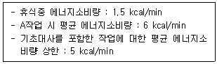
- 10.3
- 11.3
- 12.3
- 13.3
(정답률: 23%)
24. 시스템의 수명곡선(욕조곡선)에 있어서 디버깅(Debugging)에 관한 설명으로 옳은 것은?
- 초기 고장의 결함을 찾아 고장률을 안정시키는 과정이다.
- 우발 고장의 결함을 찾아 고장률을 안정시키는 과정이다.
- 마모 고장의 결함을 찾아 고장률을 안정시키는 과정이다.
- 기계 결함을 발견하기 위해 동작시험을 하는 기간이다.
(정답률: 40%)
25. 밝은 곳에서 어두운 곳으로 갈 때 망막에 시홍이 형성되는 생리적 과정인 암조응이 발생하는데 완전 암조응(Dark adaptation)이 발생하는데 소요되는 시간은?
- 약 3 ~ 5분
- 약 10 ~ 15분
- 약 30 ~ 40분
- 약 60 ~ 90분
(정답률: 40%)
26. 인간공학에 대한 설명으로 틀린 것은?
- 인간-기계 시스템의 안전성, 편리성, 효율성을 높인다.
- 인간을 작업과 기계에 맞추는 설계 철학이 바탕이 된다.
- 인간이 사용하는 물건, 설비, 환경의 설계에 적용된다.
- 인간의 생리적, 심리적인 면에서의 특성이나 함계점을 고려한다.
(정답률: 56%)
27. HAZOP 기법에서 사용하는 가이드워드와 그 의미가 잘못 연결된 것은?
- Part of : 성질상의 감소
- As well as : 성질상의 증가
- Other than : 기타 환경적인 요인
- More/Less : 정량적인 증가 또는 감소
(정답률: 42%)
28. 그림과 같은 FT도에 대한 최소 컷셋(minmal cut sets)으로 옳은 것은? (단, Fussell의 알고리즘을 따른다.)
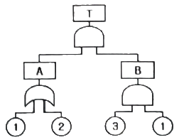
- {1, 2}
- {1, 3}
- {2, 3}
- {1, 2, 3}
(정답률: 41%)
29. 경계 및 경보신호의 설계지침으로 틀린 것은?
- 주의를 환기시키기 위하여 변조된 신호를 사용한다.
- 배경소음의 진동수와 다른 진동수의 신호를 사용한다.
- 귀는 중음역에 민감하므로 500~3000Hz의 진동수를 사용한다.
- 300m 이상의 장거리용으로는 1000Hz를 초과하는 진동수를 사용한다.
(정답률: 41%)
30. FTA(Fault Tree Analysis)에서 사용되는 사상 기호 중 통상의 작업이나 기계의 상태에서 재해의 발생 원인이 되는 요소가 있는 것은?
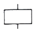
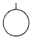
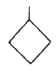
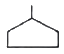
(정답률: 37%)
31. 불(Bool) 대수의 정리를 나타낸 관계식 중 틀린 것은?
- Aㆍ0 = 0
- A + 1 = 1
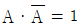
- A(A + B) = A
(정답률: 42%)
32. 근골격계질환 작업분석 및 평가 방법인 OWAS의 평가요소를 모두 고른 것은?
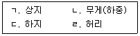
- ㄱ, ㄴ
- ㄱ, ㄷ, ㄹ
- ㄴ, ㄷ, ㄹ
- ㄱ, ㄴ, ㄷ, ㄹ
(정답률: 44%)
33. 다음 중 좌식작업이 가장 적합한 작업은?
- 정밀 조립 작업
- 4.5kg 이상의 중량물을 다루는 작업
- 작업장이 서로 떨어져 있으며 작업장 간 이동이 작은 작업
- 작업자의 정면에서 매우 높거나 낮은 곳으로 손을 자주 뻗어야 하는 작업
(정답률: 56%)
34. n개의 요소를 가진 병렬 시스템에 있어 요소의 수명(MTTF)이 지수 분포를 따를 경우, 이 시스템의 수명으로 옳은 것은?
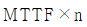
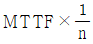
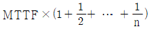
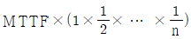
(정답률: 54%)
35. 인간-기계 시스템에 관한 설명으로 틀린 것은?
- 자동 시스템에서는 인간요소를 고려하여야 한다.
- 자동차 운전이나 전기 드릴 작업은 반자동 시스템의 예시이다.
- 자동 시스템에서 인간은 감시, 정비유지, 프로그램 등의 작업을 담당한다.
- 수동 시스템에서 기계는 동력원을 제공하고 인간의 통제 하에서 제품을 생산한다.
(정답률: 38%)
36. 양식 양립성의 예시로 가장 적절한 것은?
- 자동차 설계 시 고도계 높낮이 표시
- 방사능 사업장에 방사능 폐기물 표시
- 청각적 자극 제시와 이에 대한 음성 응답
- 자동차 설계 시 제어장치와 표시장치의 배열
(정답률: 37%)
37. 다음에서 설명하는 용어는?
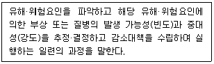
- 위험성 결정
- 위험성 평가
- 위험빈도 추정
- 유해ㆍ위험요인 파악
(정답률: 46%)
38. 태양광선이 내리쬐는 옥외장소의 자연습구온도 20℃, 흑구온도 18℃, 건구온도 30℃ 일 때 습구흑구온도지수(WBGT)는?
- 20.6℃
- 22.5℃
- 25.0℃
- 28.5℃
(정답률: 22%)
39. FTA(Fault Tree Analysis)에 관한 설명으로 옳은 것은?
- 정성적 분석만 가능하다.
- 복잡하고 대형화된 시스템의 신뢰성 분석 및 안정성 분석에 이용되는 기법이다.
- FT에 동일한 사건이 중복되어 나타나는 경우 상향식(Bottom-up)으로 정상 사건 T의 발생 확률을 계산할 수 있다.
- 기초사건과 생략사건의 확률 값이 주어지게 되더라도 정상 사건의 최종적인 발생확률을 계산할 수 없다.
(정답률: 39%)
40. 1 sone에 관한 설명으로 ( ) 에 알맞은 수치는?
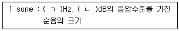
- ㄱ : 1000, ㄴ : 1
- ㄱ : 4000, ㄴ : 1
- ㄱ : 1000, ㄴ : 40
- ㄱ : 4000, ㄴ : 40
(정답률: 46%)
3과목: 기계위험방지기술
41. 다음 중 와이어 로프의 구성요소가 아닌 것은?
- 클립
- 소선
- 스트랜드
- 심강
(정답률: 38%)
42. 산업안전보건법령상 산업용 로봇에 의한 작업 시 안전조치 사항으로 적절하지 않은 것은?
- 로봇의 운전으로 인해 근로자가 로봇에 부딪힐 위험이 있을 때에는 높이 1.8m 이상의 울타리를 설치하여야 한다.
- 작업을 하고 있는 동안 로봇의 기동스위치 등은 작업에 종사하고 있는 근로자가 아닌 사람이 그 스위치 등을 조작할 수 없도록 필요한 조치를 한다.
- 로봇의 조작방법 및 순서, 작업 중의 매니퓰레이터의 속도 등에 관한 지침에 따라 작업을 하여야 한다.
- 작업에 종사하는 근로자가 이상을 발견하면, 관리 감독자에게 우선 보고하고, 지시가 나올 때 까지 작업을 진행한다.
(정답률: 59%)
43. 밀링 작업 시 안전수칙으로 옳지 않은 것은?
- 테이블 위에 공구나 기타 물건 등을 올려놓지 않는다.
- 제품 치수를 측정할 때는 절삭 공구의 회전을 정지한다.
- 강력 절삭을 할 때는 일감을 바이스에 짧게 물린다.
- 상·하, 좌·우 이송장치의 핸들은 사용 후 풀어 둔다.
(정답률: 40%)
44. 다음 중 지게차의 작업 상태별 안정도에 관한 설명으로 틀린 것은? (단, V는 최고속도(km/h) 이다.)(오류 신고가 접수된 문제입니다. 반드시 정답과 해설을 확인하시기 바랍니다.)
- 기준 부하상태의 하역작업 시의 전후 안정도는 20% 이내이다.
- 기준 부하상태의 하역작업 시의 좌우 안정도는 6% 이내이다.
- 기준 무부하상태에서 주행 시의 전후 안정도는 18% 이내이다.
- 기준 무부하상태의 주행 시의 좌우 안정도는 (15 + 1.1V)% 이내이다.
(정답률: 31%)
45. 산업안전보건법령상 보일러의 안전한 가동을 위하여 보일러 규격에 맞는 압력방출장치가 2개 이상 설치된 경우에 최고사용압력 이하에서 1개가 작동되고, 다른 압력방출장치는 최고사용압력의 몇 배 이하에서 작동되도록 부착하여야 하는가?
- 1.03배
- 1.⑤배
- 1.2배
- 1.5배
(정답률: 46%)
46. 금형의 설치, 해체, 운반 시 안전사항에 관한 설명으로 틀린 것은?
- 운반을 통하여 관통 아이볼트가 사용될 때는 구멍 틈새가 최소화되도록 한다.
- 금형을 설치하는 프레스의 T홈 안길이는 설치 볼트 지름의 1/2 이하로 한다.
- 고정볼트는 고정 후 가능하면 나사산을 3~4개 정도 짧게 남겨 설치 또는 해체 시 슬라이드 면과의 사이에 협착이 발생하지 않도록 해야 한다.
- 운반 시 상부금형과 하부금형이 닿을 위험이 있을 때는 고정 패드를 이용한 스트랩, 금속재질이나 우레탄 고무의 블록 등을 사용한다.
(정답률: 41%)
47. 선반에서 절삭 가공 시 발생하는 칩을 짧게 끊어지도록 공구에 설치되어 있는 방호장치의 일종인 칩 제거 기구를 무엇이라 하는가?
- 칩 브레이커
- 칩 받침
- 칩 쉴드
- 칩 커터
(정답률: 50%)
48. 다음 중 산업안전보건법령상 안전인증대상 방호장치에 해당하지 않는 것은?
- 연삭기 덮개
- 압력용기 압력방출용 파열판
- 압력용기 압력방출용 안전밸브
- 방폭구조(防爆構造) 전기기계·기구 및 부품
(정답률: 34%)
49. 인장강도가 250 N/mm2인 강판에서 안전율이 4라면 이 강판의 허용응력(N/mm2)은 얼마인가?
- 42.5
- 62.5
- 82.5
- 102.5
(정답률: 51%)
50. 산업안전보건법령상 강렬한 소음작업에서 데시벨에 따른 노출시간으로 적합하지 않은 것은?
- 100데시벨 이상의 소음이 1일 2시간 이상 발생하는 직업
- 110데시벨 이상의 소음이 1일 30분 이상 발생하는 직업
- 115데시벨 이상의 소음이 1일 15분 이상 발생하는 직업
- 120데시벨 이상의 소음이 1일 7분 이상 발생하는 직업
(정답률: 42%)
51. 방호장치 안전인증 고시에 따라 프레스 및 전단기에 사용되는 광전자식 방호장치의 일반구조에 대한 설명으로 가장 적절하지 않은 것은?
- 정상동작표시램프는 녹색, 위험표시램프는 붉은색으로 하며, 근로자가 쉽게 볼 수 있는 곳에 설치해야 한다.
- 슬라이드 하강 중 정전 또는 방호장치의 이상 시에 정지할 수 있는 구조이어야 한다.
- 방호장치는 릴레이, 리미트 스위치 등의 전기부품의 고장, 전원전압의 변동 및 정전에 의해 슬라이드가 불시에 동작하지 않아야 하며, 사용전원전압의 ±(100분의 10)의 변동에 대하여 정상으로 작동되어야 한다.
- 방호장치의 감지기능은 규정한 검출영역 전체에 걸쳐 유효하여야 한다.(다만, 블랭킹 기능이 있는 경우 그렇지 않다.)
(정답률: 44%)
52. 산업안전보건법령상 연삭기 작업 시 작업자가 안심하고 작업을 할 수 있는 상태는?
- 탁상용 연삭기에서 숫돌과 작업 받침대의 간격이 5mm 이다.
- 덮개 재료의 인장강도는 224MPa 이다.
- 숫돌 교체 후 2분 정도 시험운전을 실시하여 해당 기계의 이상 여부를 확인하였다.
- 작업 시작 전 1분 정도 시험운전을 실시하여 해당 기계의 이상여부를 확인하였다.
(정답률: 39%)
53. 보기와 같은 기계요소가 단독으로 발생시키는 위험점은?
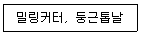
- 협착점
- 끼임점
- 절단점
- 물림점
(정답률: 53%)
54. 다음 중 크레인의 방호장치로 가장 거리가 먼 것은?
- 권과방지장치
- 과부하방지장치
- 비상정지장치
- 자동보수장치
(정답률: 55%)
55. 산업안전보건법령상 프레스기를 사용하여 작업을 할 때 작업시작 전 점검사항으로 틀린 것은?
- 클러치 및 브레이크의 기능
- 압력방출장치의 기능
- 크랭크축·플라이휠·슬라이드·연결봉 및 연결나사의 풀림 유무
- 프레스의 금형 및 고정 볼트의 상태
(정답률: 48%)
56. 설비보전은 예방보전과 사후보전으로 대별된다. 다음 중 예방보전의 종류가 아닌 것은?
- 시간계획보전
- 개량보전
- 상태기준보전
- 적응보전
(정답률: 33%)
57. 천장크레인에 중량 3kN의 화물을 2줄로 매달았을 때 매달기용 와이어(sling wire)에 걸리는 장력은 약 몇 kN 인가? (단, 매달기용 와이어(sling wire) 2줄 사이의 각도는 55° 이다.)
- 1.3
- 1.7
- 2.0
- 2.3
(정답률: 40%)
58. 다음 중 롤러의 급정지 성능으로 적합하지 않은 것은?
- 앞면 롤러 표면 원주속도가 25m/min, 앞면 롤러의 원주가 5m 일 때 급정지거리 1.6m 이내
- 앞면 롤러 표면 원주속도가 35m/min, 앞면 롤러의 원주가 7m 일 때 급정지거리 2.8m 이내
- 앞면 롤러 표면 원주속도가 30m/min, 앞면 롤러의 원주가 6m 일 때 급정지거리 2.6m 이내
- 앞면 롤러 표면 원주속도가 20m/min, 앞면 롤러의 원주가 8m 일 때 급정지거리 2.6m 이내
(정답률: 35%)
59. 조작자의 신체부위가 위험한계 밖에 위치하도록 기계의 조작 장치를 위험구역에서 일정거리 이상 떨어지게 하는 방호장치는?
- 덮개형 방호장치
- 차단형 방호장치
- 위치제한형 방호장치
- 접근반응형 방호장치
(정답률: 42%)
60. 산업안전보건법령상 아세틸렌 용접장치의 아세틸렌 발생기실을 설치하는 경우 준수하여야 하는 사항으로 옳은 것은?
- 벽은 가연성 재료로 하고 철근 콘크리트 또는 그 밖에 이와 동등하거나 그 이상의 강도를 가진 구조로 할 것
- 바닥면적의 16분의 1 이상의 단면적을 가진 배기통을 옥상으로 돌출시키고 그 개구부를 창이나 출입구로부터 1.5미터 이상 떨어지도록 할 것
- 출입구의 문은 불연성 재료로 하고 두께 1.0 밀리미터 이하의 철판이나 그 밖에 그 이상의 강도를 가진 구조로 할 것
- 발생기실을 옥외에 설치한 경우에는 그 개구부를 다른 건축물로부터 1.0미터 이내 떨어지도록 할 것
(정답률: 34%)
4과목: 전기위험방지기술
61. 대지에서 용접작업을 하고 있는 작업자가 용접봉에 접촉한 경우 통전전류는? (단, 용접기의 출력 측 무부하전압 : 90v, 접촉저항(손, 용접봉 등 포함) : 10kΩ, 인체의 내부저항 : 1kΩ, 발과 대지의 접촉저항 : 20kΩ 이다.)
- 약 0.19 mA
- 약 0.29 mA
- 약 1.96 mA
- 약 2.90 mA
(정답률: 18%)
62. KS C IEC 60079-10-2에 따라 공기 중에 분진운의 형태로 폭발성 분진 분위기가 지속적으로 또는 장기간 또는 빈번히 존재하는 장소는?
- 0종 장소
- 1종 장소
- 20종 장소
- 21종 장소
(정답률: 29%)
63. 설비의 이상현상에 나타나는 아크(Arc)의 종류가 아닌 것은?
- 단락에 의한 아크
- 지락에 의한 아크
- 차단기에서의 아크
- 전선저항에 의한 아크
(정답률: 32%)
64. 정전기 재해방지에 관한 설명 중 틀린 것은?
- 이황화탄소의 수송 과정에서 배관 내의 유속을 2.5m/s 이상으로 한다.
- 포장 과정에서 용기를 도전성 재료에 접지한다.
- 인쇄 과정에서 도포량을 소량으로 하고 접지한다.
- 작업장의 습도를 높여 전하가 제거되기 쉽게 한다.
(정답률: 36%)
65. 한국전기설비규정에 따라 사람이 쉽게 접촉할 우려가 있는 곳에 금속제 외함을 가지는 저압의 기계기구가 시설되어 있다. 이 기계기구의 사용전압이 몇 V를 초과할 때 전기를 공급하는 전로에 누전차단기를 시설해야 하는가? (단, 누전차단기를 시설하지 않아도 되는 조건은 제외한다.)
- 30V
- 40V
- 50V
- 60V
(정답률: 26%)
66. 다음 중 방폭설비의 보호등급(IP)에 대한 설명으로 옳은 것은?
- 제1 특성 숫자가 “1”인 경우 지름 50mm 이상의 외부 분진에 대한 보호
- 제1 특성 숫자가 “2”인 경우 지름 10mm 이상의 외부 분진에 대한 보호
- 제2 특성 숫자가 “1”인 경우 지름 50mm 이상의 외부 분진에 대한 보호
- 제2 특성 숫자가 “2”인 경우 지름 10mm 이상의 외부 분진에 대한 보호
(정답률: 27%)
67. 정전기 발생에 영향을 주는 요인에 대한 설명으로 틀린 것은?
- 물체의 분리속도가 빠를수록 발생량은 적어진다.
- 접촉면적이 크고 접촉압력이 높을수록 발생량이 많아진다.
- 물체 표면이 수분이나 기름으로 오염되면 산화 및 부식에 의해 발생량이 많아진다.
- 정전기의 발생은 처음 접촉, 분리할 때가 최대로 되고 접촉, 분리가 반복됨에 따라 발생량은 감소한다.
(정답률: 36%)
68. 전기기기, 설비 및 전선로 등의 충전 유무 등을 확인하기 위한 장비는?
- 위상검출기
- 디스콘 스위치
- COS
- 저압 및 고압용 검전기
(정답률: 43%)
69. 피뢰기로서 갖추어야 할 성능 중 틀린 것은?
- 충격 방전 개시전압이 낮을 것
- 뇌전류 방전 능력이 클 것
- 제한전압이 높을 것
- 속류 차단을 확실하게 할 수 있을 것
(정답률: 38%)
70. 접지저항 저감 방법으로 틀린 것은?
- 접지극의 병렬 접지를 실시한다.
- 접지극의 매설 깊이를 증가시킨다.
- 접지극의 크기를 최대한 작게 한다.
- 접지극 주변의 토양을 개량하여 대지 저항률을 떨어뜨린다.
(정답률: 40%)
71. 교류 아크용접기의 사용에서 무부하 전압이 80V, 아크 전압 25V, 아크 전류 300A 일 경우 효율은 약 몇 % 인가? (단, 내부손실은 4kW 이다.)
- 65.2
- 70.5
- 75.3
- 80.6
(정답률: 24%)
72. 아크방전의 전압전류 특성으로 가장 옳은 것은?
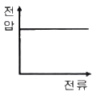
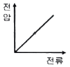
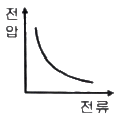
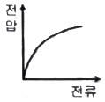
(정답률: 39%)
73. 다음 중 기기보호등급(EPL)에 해당하지 않는 것은?
- EPL Ga
- EPL Ma
- EPL Dc
- EPL Mc
(정답률: 28%)
74. 다음 중 산업안전보건기준에 관한 규칙에 따라 누전차단기를 설치하지 않아도 되는 곳은?
- 철판·철골 위 등 도전성이 높은 장소에서 사용하는 이동형 전기기계·기구
- 대지전압이 220V인 휴대형 전기기계·기구
- 임시배선이 전로가 설치되는 장소에서 사용하는 이동형 전기기계·기구
- 절연대 위에서 사용하는 전기기계·기구
(정답률: 47%)
75. 다음 설명이 나타내는 현상은?
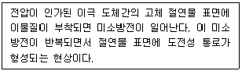
- 흑연화현상
- 트래킹현상
- 반단선현상
- 절연이동현상
(정답률: 35%)
76. 다음 중 방폭구조의 종류가 아닌 것은?
- 본질안전 방폭구조
- 고압 방폭구조
- 압력 방폭구조
- 내압 방폭구조
(정답률: 39%)
77. 심실세동 전류
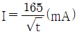
라면 심실세동 시 인체에 직접 받는 전기에너지(cal)는 약 얼마인가? (단, t는 통전시간으로 1초이며, 인체의 저항은 500Ω으로 한다.)- 0.52
- 1.35
- 2.14
- 3.27
(정답률: 19%)
78. 산업안전보건기준에 관한 규칙에 따른 전기기계·기구에 설치 시 고려할 사항으로 거리가 먼 것은?
- 전기기계·기구의 충분한 전기적 용량 및 기계적 강도
- 전기기계·기구의 안전효율을 높이기 위한 시간 가동율
- 습기·분진 등 사용장소의 주위 환경
- 전기적·기계적 방호수단의 적정성
(정답률: 38%)
79. 정전작업 시 조치사항으로 틀린 것은?
- 작업 전 전기설비의 잔류 전하를 확실히 방전한다.
- 개로된 전로의 충전여부를 검전기구에 의하여 확인한다.
- 개폐기에 잠금장치를 하고 통전금지에 관한 표지판은 제거한다.
- 예비 동력원의 역송전에 의한 감전의 위험을 방지하기 위해 단락접지 기구를 사용하여 단락 접지를 한다.
(정답률: 54%)
80. 정전기로 인한 화재 폭발의 위험이 가장 높은 것은?
- 드라이클리닝설비
- 농작물 건조기
- 가습기
- 전동기
(정답률: 39%)
5과목: 화학설비위험방지기술
81. 산업안전보건법에서 정한 위험물질을 기준량 이상 제조하거나 취급하는 화학설비로서 내부의 이상상태를 조기에 파악하기 위하여 필요한 온도계·유량계·압력계 등의 계측장치를 설치하여야 하는 대상이 아닌 것은?
- 가열로 또는 가열기
- 증류·정류·증발·추출 등 분리를 하는 장치
- 반응폭주 등 이상 화학반응에 의하여 위험물질이 발생할 우려가 있는 설비
- 흡열반응이 일어나는 반응장치
(정답률: 38%)
82. 다음 중 퍼지(purge)의 종류에 해당하지 않는 것은?
- 압력퍼지
- 진공퍼지
- 스위프퍼지
- 가열퍼지
(정답률: 35%)
83. 폭발한계와 완전 연소 조정 관계인 Jones식을 이용하여 부탄(C4H10)의 폭발하한계를 구하면 몇 vol% 인가?
- 1.4
- 1.7
- 2.0
- 2.3
(정답률: 34%)
84. 가스를 분류할 때 독성가스에 해당하지 않는 것은?
- 황화수소
- 시안화수소
- 이산화탄소
- 산화에틸렌
(정답률: 47%)
85. 다음중 폭발 방호 대책과 가장 거리가 먼 것은?
- 불활성화
- 억제
- 방산
- 봉쇄
(정답률: 23%)
86. 질화면(Nitrocellulose)은 저장·취급 중에는 에틸알코올 등으로 습면상태를 유지해야 한다. 그 이유를 옳게 설명한 것은?
- 질화면은 건조 상태에서는 자연적으로 분해하면서 발화할 위험이 있기 때문이다.
- 질화면은 알코올과 반응하여 안정한 물질을 만들기 때문이다.
- 질화면은 건조 상태에서 공기 중의 산소와 환원반응을 하기 때문이다.
- 질화면은 건조 상태에서 유독한 중합물을 형성하기 때문이다.
(정답률: 35%)
87. 분진폭발의 특징으로 옳은 것은?
- 연소속도가 가스폭발보다 크다.
- 완전연소로 가스중독의 위험이 작다.
- 화염의 파급속도보다 압력의 파급속도가 빠르다.
- 가스폭발보다 연소시간은 짧고 발생에너지는 작다.
(정답률: 41%)
88. 크롬에 대한 설명으로 옳은 것은?
- 은백색 광택이 있는 금속이다.
- 중독 시 미나마타병이 발병한다.
- 비중이 물보다 작은 값을 나타낸다.
- 3가 크롬이 인체에 가장 유해하다.
(정답률: 34%)
89. 사업주는 인화성 액체 및 인화성 가스를 저장 취급하는 화학설비에서 증기나 가스를 대기로 방출하는 경우에는 외부로부터의 화염을 방지하기 위하여 화염방지기를 설치하여야 한다. 다음 중 화염방지기의 설치 위치로 옳은 것은?
- 설비의 상단
- 설비의 하단
- 설비의 측면
- 설비의 조작부
(정답률: 47%)
90. 열교환탱크 외부를 두께 0.2m의 단열재(열전도율 k=0.037 kcal/m·h·℃)로 보온하였더니 단열재 내면은 40℃, 외면은 20℃ 이었다. 면적 1m2 당 1시간에 손실되는 열량(kcal)은?
- 0.0037
- 0.037
- 1.37
- 3.7
(정답률: 14%)
91. 산업안전보건법령상 다음 인화성 가스의 정의에서 ( ) 안에 알맞은 값은?
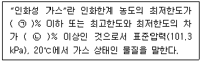
- ㉠ 13, ㉡ 12
- ㉠ 13, ㉡ 15
- ㉠ 12, ㉡ 13
- ㉠ 12, ㉡ 15
(정답률: 21%)
92. 액체 표면에서 발생한 증기농도가 공기 중에서 연소하한농도가 될 수 있는 가장 낮은 액체온도를 무엇이라 하는가?
- 인화점
- 비등점
- 연소점
- 발화온도
(정답률: 35%)
93. 위험물의 저장방법으로 적절하지 않은 것은?
- 탄화칼슘은 물 속에 저장한다.
- 벤젠은 산화성 물질과 격리시킨다.
- 금속나트륨은 석유 속에 저장한다.
- 질산은 갈색병에 넣어 냉암소에 보관한다.
(정답률: 40%)
94. 다음 중 열교환기의 보수에 있어 일상점검항목과 정기적 개방점검항목으로 구분할 때 일상점검항목으로 거리가 먼 것은?
- 도장의 노후상황
- 부착물에 의한 오염의 상황
- 보온재, 보냉재의 파손여부
- 기초볼트의 체결정도
(정답률: 27%)
95. 다음 중 반응기의 구조 방식에 의한 분류에 해당하는 것은?
- 탑형 반응기
- 연속식 반응기
- 반회분식 반응기
- 회분식 균일상반응기
(정답률: 36%)
96. 다음 중 공기 중 최소 발화에너지 값이 가장 작은 물질은?
- 에틸렌
- 아세트알데히드
- 메탄
- 에탄
(정답률: 26%)
97. 다음 표의 가스(A~D)를 위험도가 큰 것부터 작은 순으로 나열한 것은?
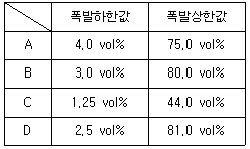
- D – B – C - A
- D – B – A - C
- C – D – A - B
- C – D – B – A
(정답률: 32%)
98. 알루미늄분이 고온의 물과 반응하였을 때 생성되는 가스는?
- 이산화탄소
- 수소
- 메탄
- 에탄
(정답률: 43%)
99. 메탄, 에탄, 프로판의 폭발하한계가 각각 5vol%, 2vol%, 2.1vol%일 때 다음 중 폭발하한계가 가장 낮은 것은? (단, Le Chatelier의 법칙을 이용한다.)
- 메탄 20vol%, 에탄 30vol%, 프로판 50vol%의 혼합가스
- 메탄 30vol%, 에탄 30vol%, 프로판 40vol%의 혼합가스
- 메탄 40vol%, 에탄 30vol%, 프로판 30vol%의 혼합가스
- 메탄 50vol%, 에탄 30vol%, 프로판 20vol%의 혼합가스
(정답률: 28%)
100. 고압가스 용기 파열사고의 주요 원인 중 하나는 용기의 내압력(耐壓力, capacity to resist presure)부족이다. 다음 중 내압력 부족의 원인으로 거리가 먼 것은?
- 용기 내벽의 부식
- 강재의 피로
- 과잉 충전
- 용접 불량
(정답률: 42%)
6과목: 건설안전기술
101. 건설현장에 거푸집동바리 설치 시 준수사항으로 옳지 않은 것은?
- 파이프서포트 높이가 4.5m를 초과하는 경우에는 높이 2m 이내마다 2개 방향으로 수평 연결재를 설치한다.
- 동바리의 침하 방지를 위해 깔목의 사용, 콘크리트 타설, 말뚝박기 등을 실시한다.
- 강재와 강재의 접속부는 볼트 또는 클램프 등 전용철물을 사용한다.
- 강관틀 동바리는 강관틀과 강관틀 사이에 교차가새를 설치한다.
(정답률: 40%)
102. 고소작업대를 설치 및 이동하는 경우에 준수하여야 할 사항으로 옳지 않은 것은?
- 와이어로프 또는 체인의 안전율은 3 이상일 것
- 붐의 최대 지면경사각을 초과 운전하여 전도되지 않도록 할 것
- 고소작업대를 이동하는 경우 작업대를 가장 낮게 내릴 것
- 작업대에 끼임ㆍ충돌 등 재해를 예방하기 위한 가드 또는 과상승방지장치를 설치할 것
(정답률: 40%)
103. 건설공사의 유해위험방지계획서 제출 기준일로 옳은 것은?
- 당해공사 착공 1개월 전까지
- 당해공사 착공 15일 전까지
- 당해공사 착공 전날까지
- 당해공사 착공 15일 후까지
(정답률: 27%)
104. 철골건립준비를 할 때 준수하여야 할 사항으로 옳지 않은 것은?
- 지상 작업장에서 건립준비 및 기계기구를 배치할 경우에는 낙하물의 위험이 없는 평탄한 장소를 선정하여 정비하여야 한다.
- 건립작업에 다소 지장이 있다하더라도 수목은 제거하거나 이설하여서는 안된다.
- 사용전에 기계기구에 대한 정비 및 보수를 철저히 실시하여야 한다.
- 기계에 부착된 앵카 등 고정장치와 기초구조 등을 확인하여야 한다.
(정답률: 53%)
1⑤. 가설공사 표준안전 작업지침에 따른 통로발판을 설치하여 사용함에 있어 준수사항으로 옳지 않은 것은?
- 추락의 위험이 있는 곳에는 안전난간이나 철책을 설치하여야 한다.
- 작업발판의 최대폭은 1.6m 이내이어야 한다.
- 비계발판의 구조에 따라 최대 적재하중을 정하고 이를 초과하지 않도록 하여야 한다.
- 발판을 겹쳐 이음하는 경우 장선 위에서 이음을 하고 겹침길이는 10cm 이상으로 하여야 한다.
(정답률: 28%)
106. 항타기 또는 항발기의 사용 시 준수사항으로 옳지 않은 것은?
- 증기나 공기를 차단하는 장치를 작업관리자가 쉽게 조작할 수 있는 위치에 설치한다.
- 해머의 운동에 의하여 증기호스 또는 공기호스와 해머의 접속부가 파손되거나 벗겨지는 것을 방지하기 위하여 그 접속부가 아닌 부위를 선정하여 증기호스 또는 공기호스를 해머에 고정시킨다.
- 항타기나 항발기의 권상장치의 드럼에 권상용 와이어로프가 꼬인 경우에는 와이어로프에 하중을 걸어서는 안된다.
- 항타기나 항발기의 권상장치에 하중을 건 상태로 정지하여 두는 경우에는 쐐기장치 또는 역회전방지용 브레이크를 사용하여 제동하는 등 확실하게 정지시켜 두어야 한다.
(정답률: 26%)
107. 건설업 중 유해위험방지계획서 제출 대상 사업장으로 옳지 않은 것은?
- 지상높이가 31m 이상인 건축물 또는 인공구조물, 연면적 30000m2이상인 건축물 또는 연면적 5000m2이상의 문화 및 집회시설의 건설공사
- 연면적 3000m2이상의 냉동ㆍ냉장 창고시설의 설비공사 및 단열공사
- 깊이 10m 이상인 굴착공사
- 최대 지간길이가 50m 이상인 다리의 건설공사
(정답률: 36%)
108. 건설작업용 타워크레인의 안전장치로 옳지 않은 것은?
- 권과 방지장치
- 과부하 방지장치
- 비상정지 장치
- 호이스트 스위치
(정답률: 48%)
109. 이동식 비계를 조립하여 작업을 하는 경우의 준수기준으로 옳지 않은 것은?
- 비계의 최상부에서 작업을 할 때에는 안전난간을 설치하여야 한다.
- 작업발판의 최대적재하중은 400kg을 초과하지 않도록 한다.
- 승강용 사다리는 견고하게 설치하여야 한다.
- 작업발판은 항상 수평을 유지하고 작업발판 위에서 안전난간을 딛고 작업을 하거나 받침대 또는 사다리를 사용하여 작업하지 않도록 한다.
(정답률: 45%)
110. 토사붕괴 원인으로 옳지 않은 것은?
- 경사 및 기울기 증가
- 성토높이의 증가
- 건설기계 등 하중작용
- 토사중량의 감소
(정답률: 42%)
111. 건설용 리프트의 붕괴 등을 방지하기 위해 받침의 수를 증가 시키는 등 안전조치를 하여야 하는 순간풍속 기준은?
- 초당 15미터 초과
- 초당 25미터 초과
- 초당 35미터 초과
- 초당 45미터 초과
(정답률: 26%)
112. 토사붕괴에 따른 재해를 방지하기 위한 흙막이 지보공 부재로 옳지 않은 것은?
- 흙막이판
- 말뚝
- 턴버클
- 띠장
(정답률: 39%)
113. 가설구조물의 특징으로 옳지 않은 것은?
- 연결재가 적은 구조로 되기 쉽다.
- 부재 결합이 간략하여 불안전 결합이다.
- 구조물이라는 개념이 확고하여 조립의 정밀도가 높다.
- 사용부재는 과소단면이거나 결함재가 되기 쉽다.
(정답률: 49%)
114. 사다리식 통로 등의 구조에 대한 설치기준으로 옳지 않은 것은?
- 발판의 간격은 일정하게 할 것
- 발판과 벽과의 사이는 15cm 이상의 간격을 유지할 것
- 사다리식 통로의 길이가 10m 이상인 때에는 7m 이내마다 계단참을 설치할 껏
- 사다리의 상단은 걸쳐놓은 지점으로부터 60cm 이상 올라가도록 할 것
(정답률: 37%)
115. 가설통로를 설치하는 경우 준수해야할 기준으로 옳지 않은 것은?
- 경사는 30° 이하로 할 것
- 경사가 25° 를 초과하는 경우에는 미끄러지지 아니하는 구조로 할 것
- 건설공사에 사용하는 높이 8m 이상인 비계다리에는 7m 이내마다 계단참을 설치할 것
- 수직갱에 가설된 통로의 길이가 15m 이상인 때에는 10m 이내마다 계단참을 설치할 것
(정답률: 36%)
116. 터널공사에서 발파작업 시 안전대책으로 옳지 않은 것은?
- 발파전 도화선 연결상태, 저항치 조사 등의 목적으로 도통시험 실시 및 발파기의 작동상태에 대한 사전점검 실시
- 모든 동력선은 발원점으로부터 최소한 15m 이상 후방으로 옳길 것
- 지질, 암의 절리 등에 따라 화약량에 대한 검토 및 시방기준과 대비하여 안전조치 실시
- 발파용 점화회선은 타동력선 및 조명회선과 한곳으로 통합하여 관리
(정답률: 51%)
117. 건설업 산업안전보건관리비 계상 및 사용기준은 산업재해보상 보험법의 적용을 받는 공사 중 총 공사금액이 얼마 이상인 공사에 적용하는가? (단, 전기공사업법, 정보통신공사업법에 의한 공사는 제외)
- 4천만원
- 3천만원
- 2천만원
- 1천만원
(정답률: 29%)
118. 건설업의 공사금액이 850억 원일 경우 산업안전보건법령에 따른 안전관리자의 수로 옳은 것은? (단, 전체 공사기간을 100으로 할 때 공사 전ㆍ후 15에 해당하는 경우는 고려하지 않는다.)
- 1명 이상
- 2명 이상
- 3명 이상
- 4명 이상
(정답률: 38%)
119. 거푸집 동바리의 침하를 방지하기 위한 직접적인 조치로 옳지 않은 것은?
- 수평연결재 사용
- 깔목의 사용
- 콘크리트의 타설
- 말뚝박기
(정답률: 24%)
120. 달비계에 사용하는 와이어로프의 사용금지 기준으로 옳지 않은 것은?
- 이음매가 있는 것
- 열과 전기 충격에 의해 손상된 것
- 지름의 감소가 공칭지름의 7%를 초과하는 것
- 와이어로프의 한 꼬임에서 끊어진 소선의 수가 7% 이상인 것
(정답률: 33%)